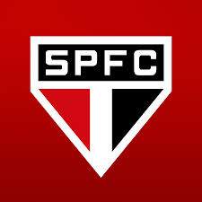

São Paulo

Sobre o Clube
SE O SÃO PAULO FC FAZ PARTE DA SUA IDENTIDADE, DE QUEM VOCÊ É... SE TE INTERESSA VER UM SÃO PAULO COM UM FUTEBOL CADA VEZ MAIS FORTE... SE VOCÊ QUER TER ACESSO A INFORMAÇÕES E CONTEÚDOS EXCLUSIVOS, EM TEMPO REAL, COM TRANSPARÊNCIA E INOVAÇÃO...

Maior estádio particular do Brasil, o Estádio Cícero Pompeu de Toledo, o Morumbi, é a casa do São Paulo FC e palco de muitos dos principais eventos esportivos e de entretenimento do continente. Além de festejar as várias glórias tricolores, o Morumbi já sediou grandes momentos paulistanos, como jogos da Seleção Brasileira, a visita do Papa João Paulo II e shows de grandes artistas como Paul McCartney, U2, Queen, Madonna e Michael Jackson, entre tantos outros. Atualmente, muito além de uma moderna instalação esportiva, o Morumbi é uma importante e lucrativa unidade de negócios do São Paulo FC. Algumas das maiores empresas do país e do mundo mantêm camarotes corporativos no estádio, que desde 2002 passou a abrigar também o Morumbi Concept Hall, espaço de compras e lazer situado no anel térreo.
Contato
Quero ser Sócio !
Venha ate nós
Praça Roberto Gomes Pedrosa Nº 123 , Morumbi - São Paulo - SP